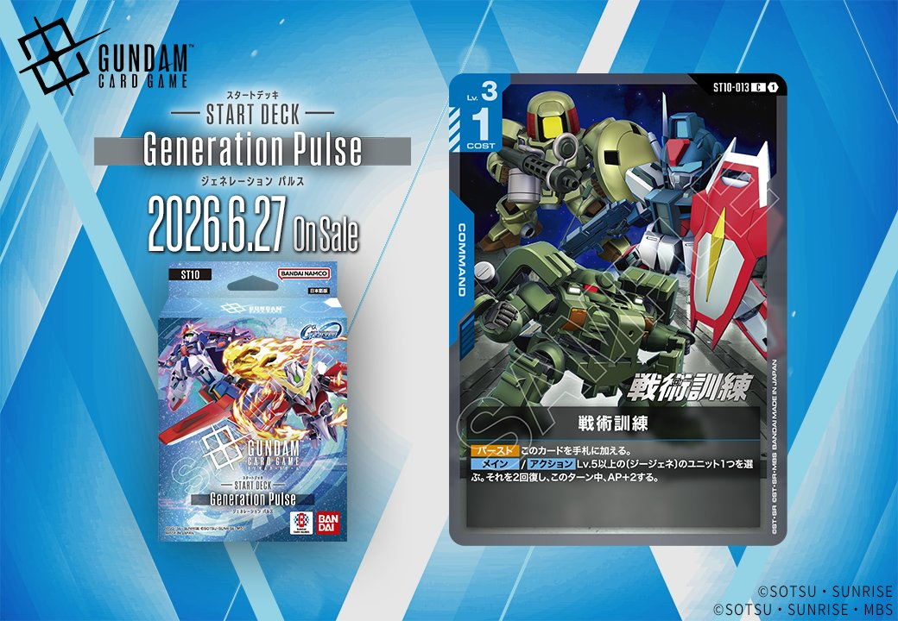
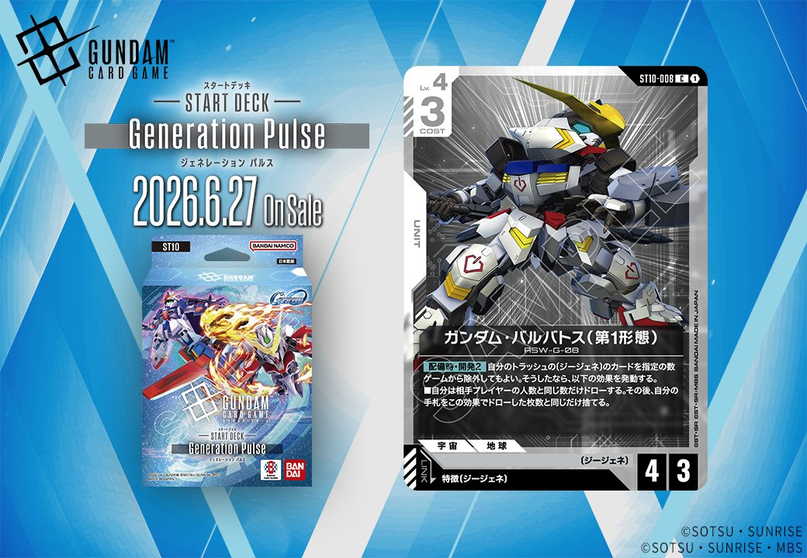

2026年6月27日発売のGeneration Pulse(ジェネレーション パルス)より、白のUNIT「ガンダム・バルバトス (第1形態)」と青のCOMMAND「戦術訓練」の2枚が収録されます。ガンダム・バルバトス (第1形態)は特徴にジージェネを持つPILOTとのリンクを条件としており、ST10収録カードとしてジージェネ特徴を軸とした構築の可能性を示しています。

戦術訓練 (ST10-013)
| 色 | 青 | タイプ | COMMAND |
| Lv | 3 | コスト | 1 |
効果: 【バースト】このカードを手札に加える。【メイン/アクション】Lv.5以上の〔ジージェネ〕のユニット1つを選ぶ。それを2回復し、このターン中、AP+2する。
Lv.5以上の〔ジージェネ〕ユニットを2回復しAP+2する青のコマンドカード。バースト効果で手札に加えられるため、相手のアタックに対して手札補充しながら次のターンの準備ができる。 〔ジージェネ〕特徴を持つ高レベルユニットの戦闘力と継戦能力を同時に強化でき、コスト1と軽いため終盤の攻防で活躍が期待できる。

ガンダム・バルバトス (第1形態) (ST10-008)
| 色 | 白 | タイプ | UNIT |
| Lv | 4 | コスト | 3 |
| AP | 4 | HP | 3 |
| 特徴 | 〔ジージェネ〕 | ||
| リンク条件 | 特徴にジージェネを持つPILOT | ||
効果: 【配備時】開発2 自分のトラッシュの〔ジージェネ〕のカードを指定の数ゲームから除外してもよい。そうしたなら、以下の効果を発動する。■自分は相手プレイヤーの人数と同じ数だけドローする。その後、自分の手札をこの効果でドローした枚数と同じだけトラッシュする。
ガンダム・バルバトス (第1形態)は、〔ジージェネ〕特徴を持つコスト3のユニットで、配備時に開発2効果を持つ。トラッシュの〔ジージェネ〕カードを除外することで、相手プレイヤーの人数分ドローし、その後同数を手札からトラッシュに置く効果は、多人数戦で真価を発揮する。 白色でAP4/HP3という標準的なスタッツながら、手札の質を向上させる効果は〔ジージェネ〕デッキの序盤から中盤にかけての展開を支える一枚となりそうだ。2026年6月27日発売のGeneration Pulseで登場予定。


関連カード
-
 アムロ・レイ(ST01-010)青系デッキ内採用率59.3% (706デッキ)
アムロ・レイ(ST01-010)青系デッキ内採用率59.3% (706デッキ) -
 ガンダム(ST01-001)青系デッキ内採用率58.3% (694デッキ)
ガンダム(ST01-001)青系デッキ内採用率58.3% (694デッキ) -
 覚悟の表れ(GD01-100)青系デッキ内採用率49% (583デッキ)
覚悟の表れ(GD01-100)青系デッキ内採用率49% (583デッキ) -
 コルシカ基地(ST02-016)青系デッキ内採用率47.5% (565デッキ)
コルシカ基地(ST02-016)青系デッキ内採用率47.5% (565デッキ) -
 ガンタンク(GD01-008)青系デッキ内採用率36.9% (439デッキ)
ガンタンク(GD01-008)青系デッキ内採用率36.9% (439デッキ) -
 ユウ・カジマ(EB01-072)NEW白系 — 同色・共通特徴: ジージェネ（新カード）
ユウ・カジマ(EB01-072)NEW白系 — 同色・共通特徴: ジージェネ（新カード） -
 ブルーディスティニー1号機(EX)(EB01-043)NEW白系 — 同色・共通特徴: ジージェネ（新カード）
ブルーディスティニー1号機(EX)(EB01-043)NEW白系 — 同色・共通特徴: ジージェネ（新カード） -
 マーク・ギルダー(ST10-012)NEW白系 — 同色・共通特徴: ジージェネ（新カード）
マーク・ギルダー(ST10-012)NEW白系 — 同色・共通特徴: ジージェネ（新カード） -
 フェニックスガンダム (能力解放) (EX)(ST10-006)NEW白系 — 同色・共通特徴: ジージェネ（新カード）
フェニックスガンダム (能力解放) (EX)(ST10-006)NEW白系 — 同色・共通特徴: ジージェネ（新カード） -
 ティファ・アディール&フリーデン(EB01-090)NEW白系 — 同色・共通特徴: ジージェネ（新カード）
ティファ・アディール&フリーデン(EB01-090)NEW白系 — 同色・共通特徴: ジージェネ（新カード）